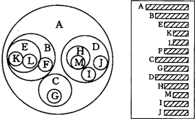

数据结构的树存储结构
之前介绍的所有的数据结构都是线性存储结构。本章所介绍的树结构是一种非线性存储结构，存储的是具有“一对多”关系的数据元素的集合。

图 1(A) 是使用树结构存储的集合 {A,B,C,D,E,F,G,H,I,J,K,L,M} 的示意图。对于数据 A 来说，和数据 B、C、D 有关系；对于数据 B 来说，和 E、F 有关系。这就是“一对多”的关系。
将具有“一对多”关系的集合中的数据元素按照图 1（A）的形式进行存储，整个存储形状在逻辑结构上看，类似于实际生活中倒着的树（图 1（B）倒过来），所以称这种存储结构为“树型”存储结构。
父结点（双亲结点）、子结点和兄弟结点：对于图 1（A）中的结点 A、B、C、D 来说，A 是 B、C、D 结点的父结点（也称为“双亲结点”），而 B、C、D 都是 A 结点的子结点（也称“孩子结点”）。对于 B、C、D 来说，它们都有相同的父结点，所以它们互为兄弟结点。
树根结点（简称“根结点”）：每一个非空树都有且只有一个被称为根的结点。图 1（A）中，结点 A 就是整棵树的根结点。
空树：如果集合本身为空，那么构成的树就被称为空树。空树中没有结点。
前面讲到，树可以理解为是由根结点和若干子树构成的，而这若干子树本身是一个森林，所以，树还可以理解为是由根结点和森林组成的。用一个式子表示为：
（A） （B）
图 2（B）使用的是凹入表示法（了解即可），表示方式是：最长条为根结点，相同长度的表示在同一层次。例如 B、C、D 长度相同，都为 A 的子结点，E 和 F 长度相同，为 B 的子结点，K 和 L 长度相同，为 E 的子结点，依此类推。
最常用的表示方法是使用广义表的方式。图 1（A）用广义表表示为：
(A) (B)
图 1 树的示例
图 1(A) 是使用树结构存储的集合 {A,B,C,D,E,F,G,H,I,J,K,L,M} 的示意图。对于数据 A 来说，和数据 B、C、D 有关系；对于数据 B 来说，和 E、F 有关系。这就是“一对多”的关系。
将具有“一对多”关系的集合中的数据元素按照图 1（A）的形式进行存储，整个存储形状在逻辑结构上看，类似于实际生活中倒着的树（图 1（B）倒过来），所以称这种存储结构为“树型”存储结构。
树的结点
结点：使用树结构存储的每一个数据元素都被称为“结点”。例如，图 1（A）中，数据元素 A 就是一个结点；父结点（双亲结点）、子结点和兄弟结点：对于图 1（A）中的结点 A、B、C、D 来说，A 是 B、C、D 结点的父结点（也称为“双亲结点”），而 B、C、D 都是 A 结点的子结点（也称“孩子结点”）。对于 B、C、D 来说，它们都有相同的父结点，所以它们互为兄弟结点。
树根结点（简称“根结点”）：每一个非空树都有且只有一个被称为根的结点。图 1（A）中，结点 A 就是整棵树的根结点。
树根的判断依据为：如果一个结点没有父结点，那么这个结点就是整棵树的根结点。
叶子结点：如果结点没有任何子结点，那么此结点称为叶子结点（叶结点）。例如图 1（A）中，结点 K、L、F、G、M、I、J 都是这棵树的叶子结点。
子树和空树
子树：如图 1（A）中，整棵树的根结点为结点 A，而如果单看结点 B、E、F、K、L 组成的部分来说，也是棵树，而且节点 B 为这棵树的根结点。所以称 B、E、F、K、L 这几个结点组成的树为整棵树的子树；同样，结点 E、K、L 构成的也是一棵子树，根结点为 E。知道了子树的概念后，树也可以这样定义：树是由根结点和若干棵子树构成的。注意：单个结点也是一棵树，只不过根结点就是它本身。图 1（A）中，结点 K、L、F 等都是树，且都是整棵树的子树。
空树：如果集合本身为空，那么构成的树就被称为空树。空树中没有结点。
补充：在树结构中，对于具有同一个根结点的各个子树，相互之间不能有交集。例如，图 1（A）中，除了根结点 A，其余元素又各自构成了三个子树，根结点分别为 B、C、D，这三个子树相互之间没有相同的结点。如果有，就破坏了树的结构，不能算做是一棵树。
结点的度和层次
对于一个结点，拥有的子树数（结点有多少分支）称为结点的度（Degree）。例如，图 1（A）中，根结点 A 下分出了 3 个子树，所以，结点 A 的度为 3。
一棵树的度是树内各结点的度的最大值。图 1（A）表示的树中，各个结点的度的最大值为 3，所以，整棵树的度的值是 3。
结点的层次：从一棵树的树根开始，树根所在层为第一层，根的孩子结点所在的层为第二层，依次类推。对于图 1（A）来说，A 结点在第一层，B、C、D 为第二层，E、F、G、H、I、J 在第三层，K、L、M 在第四层。
一棵树的深度（高度）是树中结点所在的最大的层次。图 1（A）树的深度为 4。
如果两个结点的父结点虽不相同，但是它们的父结点处在同一层次上，那么这两个结点互为堂兄弟。例如，图 1（A）中，结点 G 和 E、F、H、I、J 的父结点都在第二层，所以之间为堂兄弟的关系。
有序树和无序树
如果树中结点的子树从左到右看，谁在左边，谁在右边，是有规定的，这棵树称为有序树；反之称为无序树。
在有序树中，一个结点最左边的子树称为"第一个孩子"，最右边的称为"最后一个孩子"。
拿图 1（A）来说，如果是其本身是一棵有序树，则以结点 B 为根结点的子树为整棵树的第一个孩子，以结点 D 为根结点的子树为整棵树的最后一个孩子。
森林
由 m（m >= 0）个互不相交的树组成的集合被称为森林。图 1（A）中，分别以 B、C、D 为根结点的三棵子树就可以称为森林。前面讲到，树可以理解为是由根结点和若干子树构成的，而这若干子树本身是一个森林，所以，树还可以理解为是由根结点和森林组成的。用一个式子表示为：
Tree =（root,F）
其中，root 表示树的根结点，F 表示由 m（m >= 0）棵树组成的森林。
树的表示方法
除了图 1（A）表示树的方法外，还有其他表示方法：

（A） （B）
图2 树的表示形式
图 2（A）是以嵌套的集合的形式表示的（集合之间绝不能相交，即图中任意两个圈不能相交）。图 2（B）使用的是凹入表示法（了解即可），表示方式是：最长条为根结点，相同长度的表示在同一层次。例如 B、C、D 长度相同，都为 A 的子结点，E 和 F 长度相同，为 B 的子结点，K 和 L 长度相同，为 E 的子结点，依此类推。
最常用的表示方法是使用广义表的方式。图 1（A）用广义表表示为：
(A , ( B ( E ( K , L ) , F ) , C ( G ) , D ( H ( M ) , I , J ) ) )
总结
树型存储结构类似于家族的族谱，各个结点之间也同样可能具有父子、兄弟、表兄弟的关系。本节中，要重点理解树的根结点和子树的定义，同时要会计算树中各个结点的度和层次，以及树的深度。关注公众号「站长严长生」，在手机上阅读所有教程，随时随地都能学习。内含一款搜索神器，免费下载全网书籍和视频。

微信扫码关注公众号